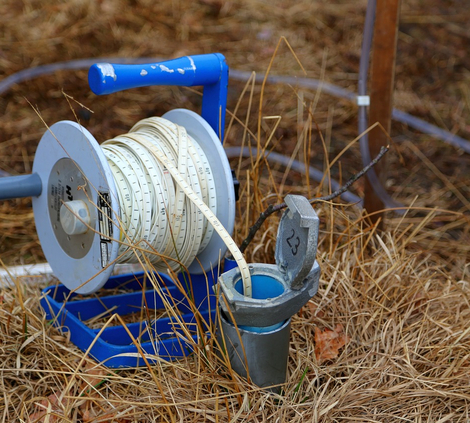

"Exploración y explotación sustentable de los acuíferos en México"
Departamento de Recursos Naturales - Instituto de Geofísica
Universidad Nacional Autónoma de México
Peligrosidad por Arsénico en el Acuífero Morelia - Queréndaro
Tesis doctoral
Transporte y Destino de Arsénico en el Acuífero Morelia-Querédaro
por medio de Modelación Subterránea